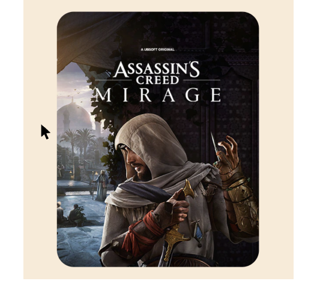
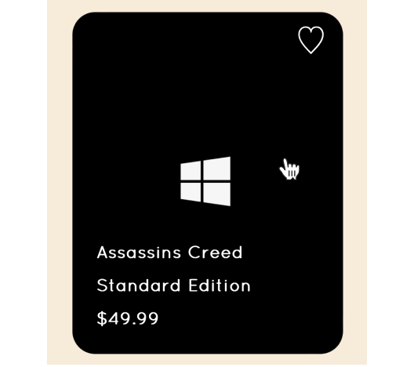
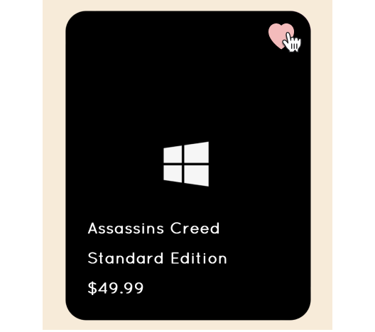
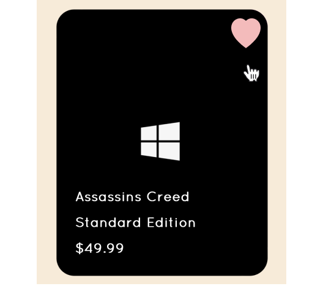
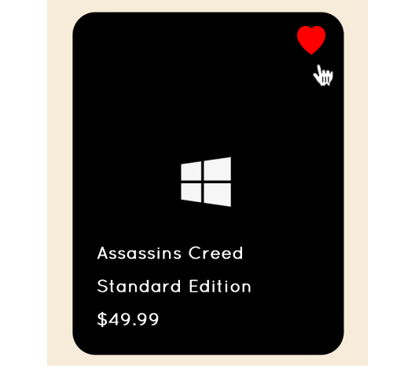

Stage 1 - hover off game card

Stage 2 - hover on game card

Stage 3 - hover on heart icon
Stage 4 - hover off heart icon

Stage 5 - click on heart icon

Stage 6 - hearting: heart icon enlarges
